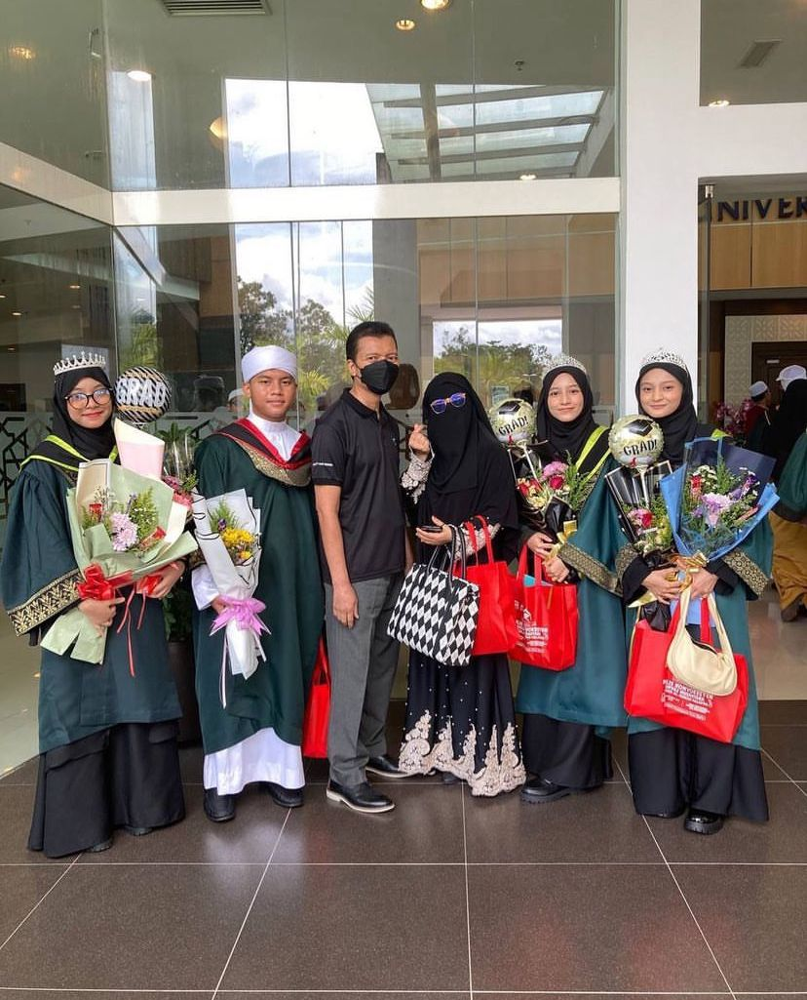

01 — Permulaan
Saya Tidak Bermula Sebagai Seorang Penulis
Pada awalnya, saya tidak pernah membayangkan bahawa pengalaman hidup akan membawa saya kepada dunia penulisan. Ada perkara yang hanya saya simpan — sebagai doa, sebagai persoalan, dan sebagai rasa yang belum mampu saya namakan.
Namun apabila kita kembali melihat perjalanan dengan hati yang lebih tenang, setiap peristiwa mula bercakap. Tulisan hadir bukan kerana saya mempunyai semua jawapan, tetapi kerana saya mahu memahami makna di sebalik apa yang berlaku.
“Kadang-kadang, tulisan bermula daripada sesuatu yang terlalu lama kita simpan di dalam hati.”

02 — Sebuah doa
Bermula dengan Sebuah Doa
Di antara doa, keluarga dan harapan yang dipanjatkan berulang kali, lahirlah kisah pertama. Ya Allah, Pilihlah Mereka bukan bermula sebagai sebuah buku, tetapi sebagai rasa syukur dan doa yang mahu diabadikan.
Dari situ saya belajar bahawa penulisan tidak semestinya bermula dengan keyakinan. Kadangkala ia bermula dengan amanah — untuk menyampaikan sesuatu yang pernah menyentuh hidup kita.
03 — Pintu yang lain
Apabila Sebuah Penulisan Membuka Pintu yang Lain
Sebuah cerita membawa kepada cerita yang lain. Daripada Cahaya Sebatang Tongkat kepada Perban Cahaya, perjalanan ini mengajar saya bahawa setiap karya mempunyai waktunya sendiri — dan setiap pintu terbuka dengan cara yang tidak pernah saya jangka.
04 — Mendengar
Daripada Melihat kepada Mendengar
Ada masa kita menulis kerana melihat sesuatu. Ada masa yang lain, kita menulis kerana belajar mendengar — suara yang terucap, suara yang terpendam dan suara hati yang sering kita abaikan.
Mulut, Telinga dan Hati lahir daripada renungan itu: bahawa kata-kata bukan sekadar bunyi, dan diam juga mempunyai makna.
05 — Amanah
Menulis untuk Memberi Makna
Empat karya, empat perjalanan, satu amanah. Siri Cahaya terus berjalan sebagai catatan kecil tentang doa, ujian, kehilangan, harapan dan cahaya yang Allah hadirkan di sepanjang jalan.